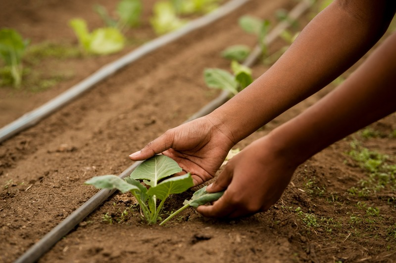

HORTAS COMUNITÁRIAS:

O que é uma horta comunitária?
As hortas comunitárias são hortas coletivas responsáveis pela produção de alimentos através
do trabalho voluntário de alguns indivíduos de uma comunidade ou uma região. Muitas vezes
são utilizadas para resolver problemas sanitários de algumas áreas da cidade, já que
empregam um uso a terrenos baldios ou subutilizados, criando um ponto verde em
uma região, além de darem vida a bairros com uma área destinada ao plantio,
oferecendo bem-estar a toda comunidade.
Mas as hortas comunitárias também podem servir como uma maneira de transformar um grupo
de pessoas e implantar hábitos melhores. Com uma área para plantação livre de agrotóxicos, os alimentos são
ricos em nutrientes e se tornam mais saudáveis.
Para evitar doenças e combater a obesidade, a Organização Mundial da Saúde (OMS) recomenda comer cinco
porções diárias de frutas, verduras e hortaliças, pelo menos cinco dias na semana. Quando a horta se torna parte
do dia a dia de um grupo de pessoas, hábitos alimentares melhores são estimulados e se tornam parte da rotina dos moradores.
Como funciona uma horta comunitária?
Com objetivos que visam à comunidade de uma região, as hortas comunitárias geralmente são feitas em áreas públicas da cidade, em espaços subutilizados que dão lugar à produção de alimentos, mas, com a popularização desse conceito, muitos condomínios residências adotaram a prática com uma proposta muito parecida com a original.
O processo é feito por voluntários que ajudam na organização e nos processos de plantio dos alimentos. A horta geralmente produz produtos de ciclos curtos e que podem ser facilmente consumidos ou vendidos, portanto tipos variados de plantas podem ser cultivados, sendo os mais comuns: hortaliças, leguminosas, frutas, plantas com propriedades medicinais e até mudas.
Como fazer uma horta comunitária?
Muito utilizada em bairros ou até em condomínios residenciais, a horta comunitária é um artifício para dar uso a espaços esquecidos que podem se tornar uma área verde que só oferecerá benefícios aos moradores.
Depois de entender como a horta funciona, é normal que você fique animado e até pense em começar uma na região onde você mora. Então para não ficar perdido, confira um passo a passo e dicas que podem te ajudar a criar uma horta comunitária para você e para seus vizinhos!